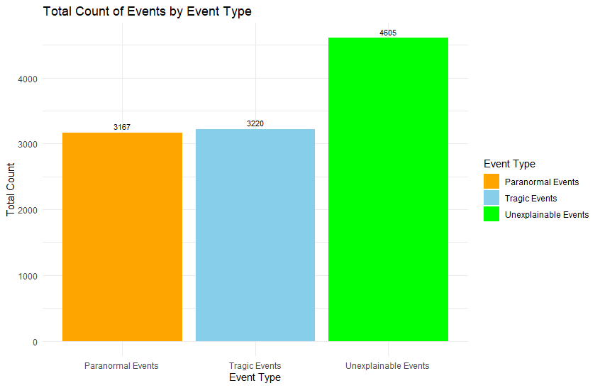
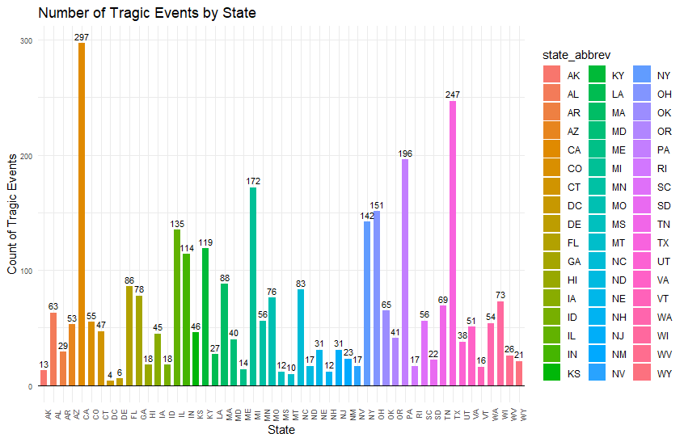
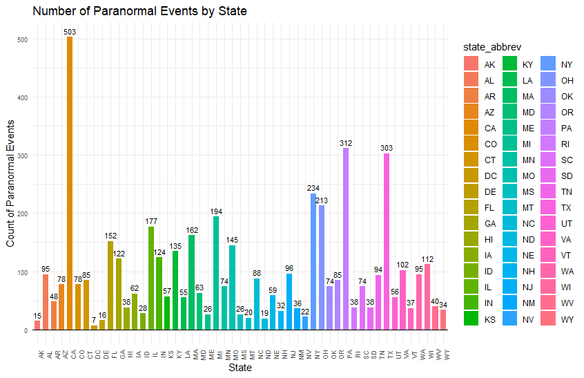
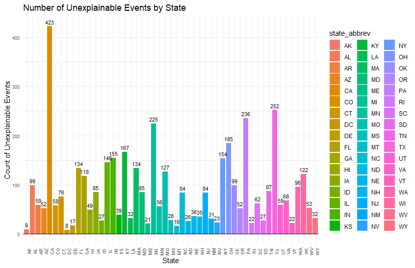
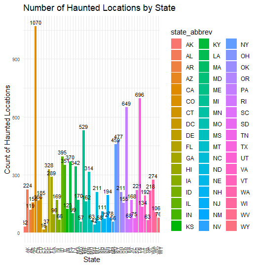
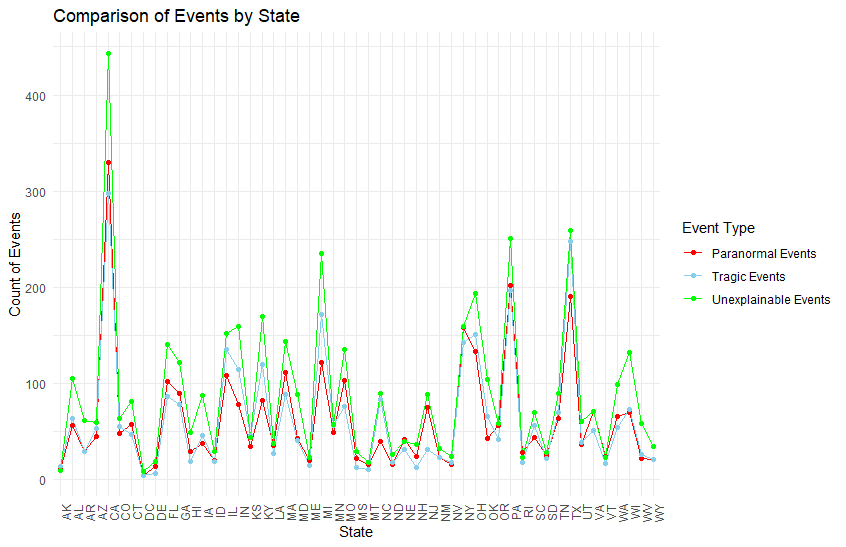

eda
Statement of the Research Question & Analysis Objective:
Research Question:
What are the main factors that contribute to the distribution of haunted locations throughout the United States? How many locations are there of each category in the following list:
tragic or historical events
unexplained phenomena
burial grounds and cemeteries
legends and folklore
psychical or paranormal research
cultural and religious beliefs
Analysis Objective:
Our primary objective is to analyze the dataset of haunted locations in the United States to understand the factors that lead to their designation as haunted. Specifically, we aim to:
Analyze the descriptions within the dataset: We will examine the descriptions provided in the dataset to determine whether most haunted location are caused by certain events or by unexplained phenomena.
Based on the descriptions, we can categorize each location into the groups mentioned in the Research Question section and ascertain the number of events attributed to each category.
Description of the Data
The most important variable from our dataset is the “description.” We will rely on this variable to answer our research questions.
Because description contains sentences that explaining why the location is considered haunted, we can use a search algorithm to identify specific keywords within these sentences. These keywords will help filter and sort out our data. For instance, if a sentence in the description contains words like “killed” or “death,” then we can classify the location under the category of tragic or historical events.
Instead of utilizing the previously mentioned categories, we simplified them into three main categories: tragic events, paranormal events, and unexplainable events. If our search algorithm identifies words like “death,” “killed,” or “murdered” in the description, the haunted location will be categorized as a tragic event since something happened there. A paranormal event is distinguished by the presence of words like “ghost,” “haunted,” or “supernatural.” All other descriptions will be classified as unexplainable events. One thing to note is that there can be an overlap between tragic and paranormal events, as a death or murder at a haunted location may also result in paranormal phenomena.
Exploratory Data Analysis
Figure 1. Down below is a bar graph that shows us the total count of events by the defined event types. Our dataset had 10,992 observations. There are more unexplainable events compared to tragic and paranormal events.

Figure 2. Down below is a bar graph that shows the number of tragic events by state. We can see that the state of California has the most amount of haunted locations due to deaths/murders followed by Texas then Pennsylvania.

Figure 3. Down below is a bar graph that shows the number of paranormal events by state. We can see that the state of California also ranked top for the state that has the most paranormal events followed by Pennsylvania then Texas.

Figure 4. Down below is a bar graph that shows the number of unexplainable events by state. We can see that the state of California still ranks top among the states followed by Texas then Pennsylvania.

Figure 5. Down below is an overall look of the states. California has the highest number of haunted locations compare to any other states with a total of 1070 number of entries.

